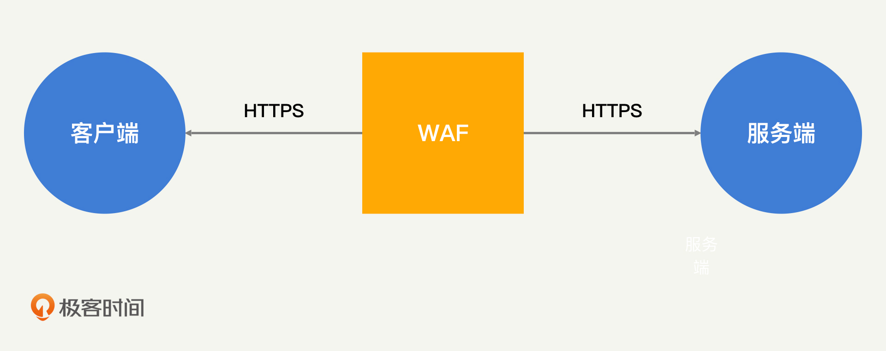
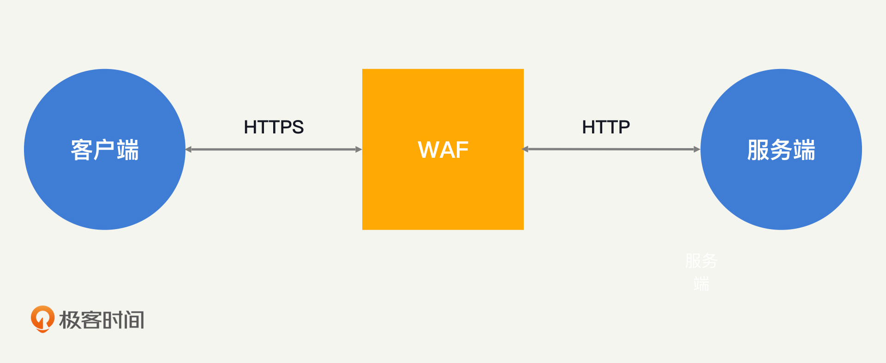
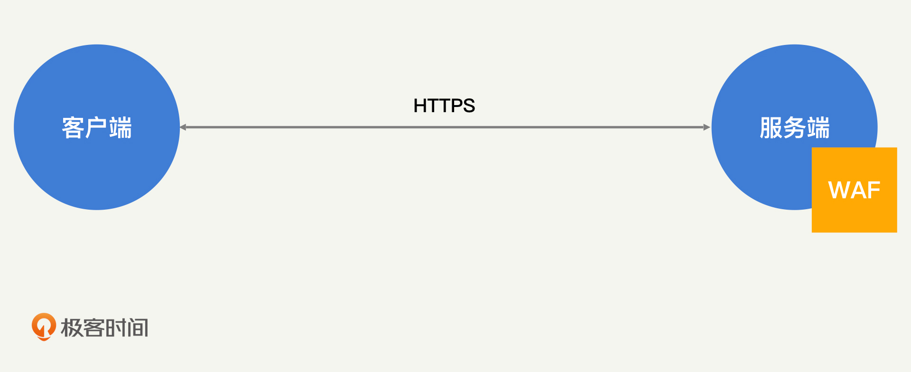
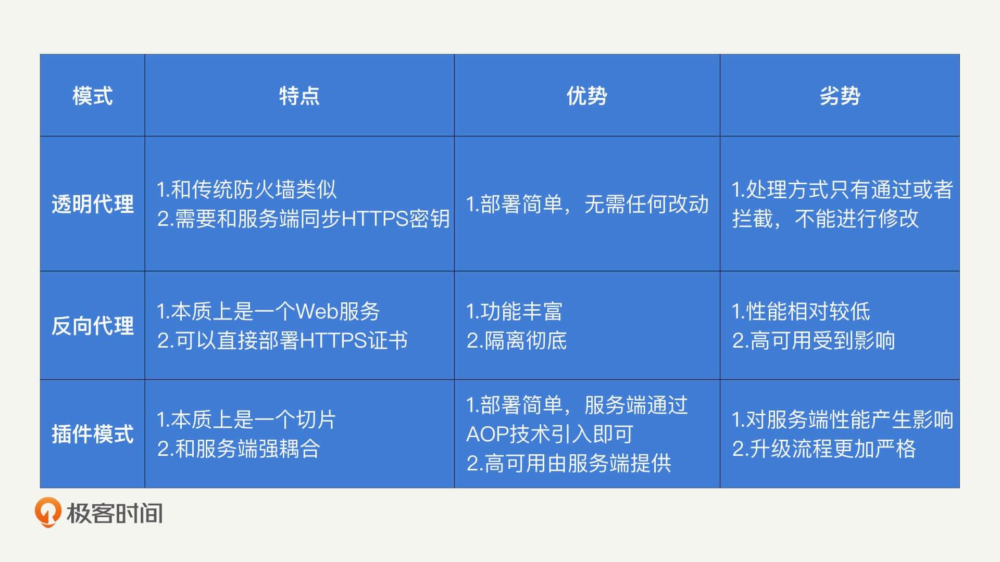
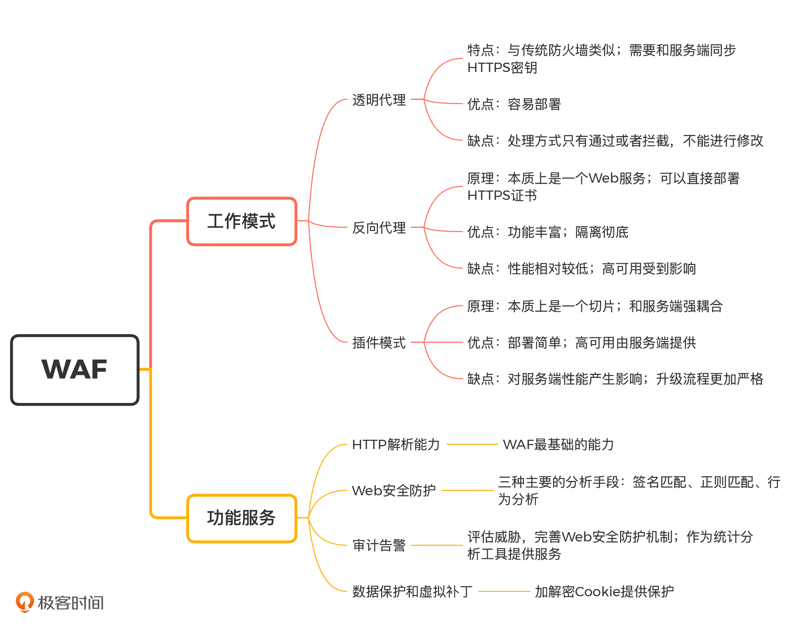

- 00 开篇词 别说你没被安全困扰过.md.html
- 01 安全的本质：数据被窃取后，你能意识到问题来源吗？.md.html
- 02 安全原则：我们应该如何上手解决安全问题？.md.html
- 03 密码学基础：如何让你的密码变得“不可见”？.md.html
- 04 身份认证：除了账号密码，我们还能怎么做身份认证？.md.html
- 05 访问控制：如何选取一个合适的数据保护方案？.md.html
- 06 XSS：当你“被发送”了一条微博时，到底发生了什么？.md.html
- 07 SQL注入：明明设置了强密码，为什么还会被别人登录？.md.html
- 08 CSRF_SSRF：为什么避免了XSS，还是“被发送”了一条微博？.md.html
- 09 反序列化漏洞：使用了编译型语言，为什么还是会被注入？.md.html
- 10 信息泄露：为什么黑客会知道你的代码逻辑？.md.html
- 11 插件漏洞：我的代码看起来很安全，为什么还会出现漏洞？.md.html
- 13 Linux系统安全：多人共用服务器，如何防止别人干“坏事”？.md.html
- 14 网络安全：和别人共用Wi-Fi时，你的信息会被窃取吗？.md.html
- 15 Docker安全：在虚拟的环境中，就不用考虑安全了吗？.md.html
- 16 数据库安全：数据库中的数据是如何被黑客拖取的？.md.html
- 17 分布式安全：上百个分布式节点，不会出现“内奸”吗？.md.html
- 18 安全标准和框架：怎样依“葫芦”画出好“瓢”？.md.html
- 19 防火墙：如何和黑客“划清界限”？.md.html
- 20 WAF：如何为漏洞百出的Web应用保驾护航？.md.html
- 21 IDS：当黑客绕过了防火墙，你该如何发现？.md.html
- 22 RASP：写规则写得烦了？尝试一下更底层的IDS.md.html
- 23 SIEM：一个人管理好几个安全工具，如何高效运营？.md.html
- 24 SDL：怎样才能写出更“安全”的代码？.md.html
- 25 业务安全体系：对比基础安全，业务安全有哪些不同？.md.html
- 26 产品安全方案：如何降低业务对黑灰产的诱惑？.md.html
- 27 风控系统：如何从海量业务数据中，挖掘黑灰产？.md.html
- 28 机器学习：如何教会机器识别黑灰产？.md.html
- 29 设备指纹：面对各种虚拟设备，如何进行对抗？.md.html
- 30 安全运营：“黑灰产”打了又来，如何正确处置？.md.html
- 加餐1 数据安全：如何防止内部员工泄露商业机密？.md.html
- 加餐2 前端安全：如何打造一个可信的前端环境？.md.html
- 加餐3 职业发展：应聘安全工程师，我需要注意什么？.md.html
- 加餐4 个人成长：学习安全，哪些资源我必须要知道？.md.html
- 加餐5 安全新技术：IoT、IPv6、区块链中的安全新问题.md.html
- 模块串讲（一）Web安全：如何评估用户数据和资产数据面临的威胁？.md.html
- 模块串讲（三）安全防御工具：如何选择和规划公司的安全防御体系？.md.html
- 模块串讲（二）Linux系统和应用安全：如何大范围提高平台安全性？.md.html
- 结束语 在与黑客的战役中，我们都是盟友！.md.html
- 捐赠
20 WAF：如何为漏洞百出的Web应用保驾护航？
你好，我是何为舟。
如果你细心观察的话，应该会发现，随着Web应用越来越多，黑客的攻击目标也逐渐转向了针对Web安全的攻击。传统的防火墙主要专注于网络层的攻击防御，对Web安全的防御能力相对欠缺。因此，WAF（Web Application Firewall，Web应用防护系统）的概念也就被提了出来。WAF说白了就是应用网关防火墙的一种，它只专注于Web安全的防御，近几年来逐渐被当成一个相对独立的产品方向来研究。
那么，WAF和防火墙到底有哪些区别呢？针对我们之前讲过的各种Web攻击手段，WAF是如何提供保护的呢？今天，我们就一起来看！
WAF的工作模式
前面我说过，WAF的本质是“专注于Web安全的防火墙”，Web安全关注于应用层的HTTP请求。因此，WAF的分析和策略都工作于应用层。
在Web安全这个方向上，WAF对比防火墙又做出了哪些改进呢？我们可以从WAF的三种工作模式入手，探讨这两者的区别。这三种工作模式分别是：透明代理、反向代理和插件模式。
透明代理和大部分防火墙的工作模式相同：在客户端和服务端通信不需要作出任何改变的情况下，对HTTP流量进行请求和转发。在这个过程中，为了解密HTTPS流量，WAF必须和服务端同步HTTPS对称密钥。- - 透明代理的优点就是容易部署，它不需要客户端和服务端进行任何改动。但是，透明代理的缺点也有很多。透明代理本身不是一个Web服务，所以它无法修改或者响应HTTP的请求，只能够控制请求的通过或者拒绝。正因为如此，它也无法实现Web服务所提供的认证、内容过滤等功能。
区别于透明代理，反向代理要求客户端将请求的目标地址指向WAF，而不是服务端。在反向代理工作模式中，服务端接收的请求，实际上也是由WAF发起的。在这个过程中，WAF本身就相当于一个Web服务，只不过对所有的HTTP请求都进行了转发。- - 因为反向代理WAF本质上是一个Web服务，所以HTTPS证书可以直接部署在WAF上。WAF在对HTTPS流量解密之后，就可以在内网中用HTTP的形式，向服务端发起代理请求了。
而且，反向代理WAF作为一个Web服务，能够提供的功能也更加丰富。比如，WAF可以充当一个前置的认证平台，对所有请求进行身份校验和身份管理。同时，也因为在反向代理工作模式中，客户端和服务端不直接通信，而是将全部请求都先请求到WAF上，所以反向代理WAF对服务端的隔离也更加彻底。
但是，反向代理同样存在缺点。首先，功能更丰富意味着性能开销更大。因此，反向代理WAF对硬件要求更高。其次，反向代理WAF一旦宕机，就无法响应客户端的任何请求。这样一来，即使服务端仍然正常，但用户已经无法正常使用应用了。而对于透明代理WAF来说，如果WAF宕机了，只是无法提供Web防护而已，客户端和服务端的通信不会受到任何影响。
最后，我们来看插件模式。在插件模式中，WAF不再是网络中一个独立的安全产品了，而是以插件的形式依附于Web服务端本身，为Web安全提供防护。
那怎么才能将WAF植入到服务端的逻辑中呢？我们最常使用的一种技术就是AOP（Aspect Oriented Programming，面向切面编程）技术。在AOP技术中，WAF可以作为一个切片植入到服务端的逻辑中。- - 而且，目前AOP技术十分流行，各类编程语言都支持。所以，插件模式的WAF部署同样十分简单。但是，这种将WAF和服务端强耦合的方式，会带来一定的负向影响。
首先，WAF和服务端一块工作在服务器上，会消耗服务器额外的资源，对Web服务本身的性能产生影响。
其次，WAF和服务端耦合，也就意味着WAF的所有改动都会直接影响到服务端。对于代理模式的WAF来说，通常只需要自测就可以升级了。而对于插件模式的WAF，它本身的升级必须和服务端一起进入评估和测试流程，就会增加额外的工作量。
为了帮助你理解这三种工作模式，我总结了一张表格。- - 总结一下，关于WAF的三种工作模式，你需要重点掌握这些内容：首先，WAF将处理的请求协议限定为HTTP，所以WAF比应用网关防火墙具备更高的专业性和灵活性；其次，WAF可以以代理的形式，在网络中提供Web安全防护，也可以作为插件嵌入到服务端中；最后，我们也可以根据需求、成本和硬件环境等因素，选择不同的部署模式对Web安全进行防护。
WAF的功能
在了解WAF的主要工作模式之后，我们知道，在部署模式上WAF比防火墙具备更高的灵活性。WAF可以根据不同的需求，以不同的形式为Web服务提供保护。同样地，在功能上，WAF也可以去实现一些HTTP请求中特有的安全功能。比如去解析HTTP数据、解密HTTPS流量等。下面，我们就来看一下，WAF到底有哪些功能服务？
1. HTTP解析能力
我们知道，WAF专注于Web安全。因此，对HTTP请求进行解析是WAF最基础的能力。在HTTP中，通用的内容包括：请求的URL以及其中的参数、HTTP头部信息、POST的body内容等。
除此之外，某些攻击特征可能隐藏得比较深，比如JSON中的某个字段，无法通过JSON的整体内容检测出来，我们必须一个字段一个字段去判断。因此，WAF还需要解析XML、JSON等RPC传输协议，能够理解对应的key和value分别是什么。
除了单纯地解析内容，WAF还需要对HTTP内容做必要的处理。为什么要这么做呢？这主要有两方面原因。
第一，HTTP中的内容可能经过了UrlEncode等编码方式的处理，因此，WAF需要具备解码能力，避免攻击的特征通过编码来进行绕过。
第二，想要看到HTTPS中的加密内容，WAF必须能够解密HTTPS请求。在透明代理模式中，WAF需要和服务端同步HTTPS的密钥，才能够获得解密的请求；在反向代理模式中，WAF自带证书，可以直接解密；在插件模式中，WAF依靠服务端解密请求之后，再进行HTTP的解析。
2. Web安全防护
通过对HTTP请求进行解析、对编码内容进行解码和对HTTPS进行解密之后，WAF就能够获得全部HTTP请求内容了。在此基础之上，WAF就可以对请求内容进行分析，为Web服务提供安全保护了。
我总结了三种主要的分析手段。
- 签名匹配：和杀毒软件中病毒库的概念类似，WAF也可以维护一个攻击样本库。样本库中存有已知攻击请求的散列签名，只要HTTP请求内容的散列签名在这个样本库，就说明HTTP请求中携带了攻击内容。
- 正则匹配：签名匹配需要请求完全一致才能够检测出来，而正则匹配只需要部分特征就可以检测。WAF可以通过抽象一些攻击特征的正则表达式，对HTTP请求进行检测。比如，如果请求的某个参数中出现了单引号，那么很有可能就是黑客发起的SQL注入攻击。
- 行为分析：除了针对单次请求的分析之外，WAF还可以针对连续的访问请求特征进行提取和分析。为什么要这么做呢？这是因为，很多时候，我们无法准确判断单次请求是不是攻击请求，但是如果疑似的攻击请求频繁出现，我们就基本能够确定了。也就是说，一个用户不会频繁地访问同一个页面，而黑客需要对一个漏洞点发起多次尝试，才能够实现攻击的效果。
在识别到攻击的请求之后，WAF就可以对请求进行拦截，从而避免Web服务受到黑客的攻击了。
3. 审计告警
WAF还有另外一个重要的功能，就是为Web服务提供安全相关的审计和告警功能。Web安全相关的审计包括：发生攻击的时间、路径、频次等。通过这些信息，开发人员能够知道自己的Web服务面对的攻击威胁是什么样的，也就能够更好地评估威胁，完善Web安全防护机制。
除此之外，WAF还能提供其他的审计能力。这是因为，WAF能够解析出HTTP请求的全部内容，提供审计所需要的全部日志字段。这些日志可以是各个页面的访问次数、用户的访问行为和接口的响应性能等。尽管这些指标和安全没有太多关系，但是它们对于产品设计和服务质量来说都很常见，那么WAF就可以作为一个统计分析工具，来为你提供服务。
4. 数据保护和虚拟补丁
反向代理或者插件模式的WAF，还能够对HTTP请求中的数据进行一定的处理，提供额外的数据保护功能。
最简单的，WAF可以加密HTTP响应中的Cookie内容，使得Cookie以保密的形式存储在浏览器中。当浏览器将加密后的Cookie附加到HTTP请求中的时候，WAF又可以进行解密。这样一来，服务端接收到的始终是明文的信息，而实际上，WAF通过加解密为Cookie提供了额外的保护。另外，WAF还可以对返回内容中的手机号、身份证号等敏感字段进行统一的打码处理，避免因为开发的疏忽，导致这些敏感信息的泄露。
在介绍插件漏洞的时候，我们提到了防火墙可以提供虚拟补丁的功能，来临时对插件漏洞进行修复。如果插件是Web相关的服务，那么WAF是不是也可以提供虚拟补丁的功能呢？当然是可以的。那WAF是如何提供虚拟补丁的呢？我来举个简单的例子。
在经典的Structs 2漏洞中，黑客是通过Structs 2中包含的漏洞接口发起攻击的。所以，WAF只需要将这些包含漏洞的接口进行封禁，或者对请求内容中的Structs 2攻击特征（特定接口的异常序列化数据）进行分析拦截，就能够临时避免Structs 2受到已公开的漏洞攻击。之后，我们只需要对Structs 2进行升级再打上补丁，这样就可以下线虚拟补丁了。
总结
好了，今天的内容讲完了。我们来一起总结回顾一下，你需要掌握的重点内容。
在今天的课程中，我们主要介绍了WAF的工作模式和主要功能。简单来说，WAF就是专注于Web安全的防火墙，它能够以透明代理、反向代理和插件的模式，运行在网络和系统的各个环节中。从功能上来说，WAF能够解决绝大部分的Web安全问题，对于黑客针对Web的攻击进行分析和拦截，同时提供额外的审计告警、数据保护等能力。
同样地，在选取WAF的时候，我们首先需要考虑功能的完整性和易用性。公司能够以较低的成本部署WAF，并解决大部分的Web安全问题，这是WAF最关键的效果。其次，就是可配置和可维护性，对于漏过的攻击请求如何进行补充完善，对于误判的请求如何进行放行，这是我们在使用WAF过程中必然会遇到的问题。一个好的WAF产品应该提供友好的入口，供开发和运维人员对漏过和误判的规则进行维护。- 
思考题
最后，给你留一道思考题。
任何安全产品都不可能达到100%的安全。你可以思考一下，在Web安全中，黑客能够通过哪些方式绕过WAF的检测和过滤呢？
欢迎留言和我分享你的思考和疑惑，也欢迎你把文章分享给你的朋友。我们下一讲再见！
© 2019 - 2023 Liangliang Lee. Powered by gin and hexo-theme-book.